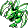
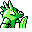

#123
Scyther
Bug
With ninja-like agility and speed, it can create the illusion that there is more than one
Base stats Total 420
HP70
Attack110
Defense80
Speed105
Special55
Details
- Species
- Mantis
- Height
- 4'11"
- Weight
- 123.0 lb
- Catch rate
- 255
- Base exp
- 187
- Growth
- Medium Fast
Level-up moves
LevelMoveType
StartQuick AttackNormal
Lv 7LeerNormal
Lv 11Pin MissileBug
Lv 12Gust
Lv 16Bug BiteBug
Lv 20Wing Attack
Lv 22Focus EnergyNormal
Lv 24LungeBug
Lv 27SlashNormal
Lv 31Razor Wind
Lv 34X ScissorBug
Evolution
Where to find
TM / HM
TM02 Razor WindTM03 Swords DanceTM06 ToxicTM09 Take DownTM10 Double-EdgeTM15 Hyper BeamTM18 CounterTM31 MimicTM32 Double TeamTM34 BideTM39 SwiftTM44 RestTM50 SubstituteHM01 CutHM02 Fly